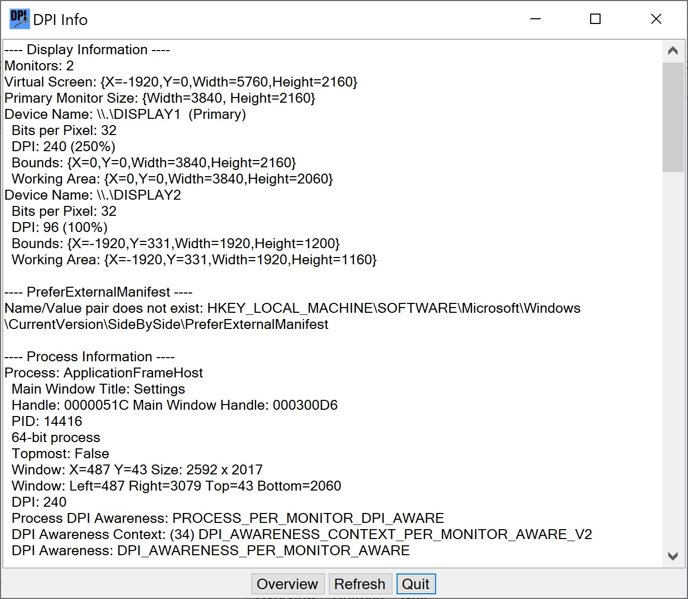

DPI Info is useful for determining the DPI awareness of running processes as well as other information that may be useful. There has been an ongoing problem with running applications on high-resolution monitors in Windows. One often gets a user interface that is too small to read comfortably or one that is pixelated. The options that Microsoft has provided to deal with these issues have improved with new major updates to Windows, but it may be helpful to have this information to decide what to do. This overview only describes what DPI Info does and is not a treatise on the subject.
DPI Info specifically lists information about each process that has a Main Window. This information includes the Main Window title, the window handle, the process id (PID), whether it is a 32-bit or 64-bit process, whether it is a topmost window, the window position and size, its DPI, its Process DPI Awareness, its DPI Awareness Context, and its DPI Awareness. It also displays information about the Monitors attached to the system and whether HKEY_LOCAL_MACHINE\SOFTWARE\Microsoft\Windows\CurrentVersion\SideBySide\PreferExternalManifest is set in the registry.
This information is typically obtained from Windows native system calls.
The simple picture is that processes are
The word "should" is used because often applications say they are DPI aware but do not implement it properly, especially for the newer very high resolution monitors with resolutions of 4K or so. A user interface that is too small to be read comfortably is usually a result of a bad implementation or one that was written when "high resolution" had a different meaning. One solution is to set the application to be DPI unaware, in which case Windows tells it it is running on a 96 dpi system and then scales it to the actual display resolution.. This often results in pixelated interfaces, but ones that can be read.
Setting it to be DPI unaware is usually done in Properties for the application under the Compatibility tab. How you access this has changed as Windows has evolved. A setting of "Override high DPI scaling behavior. Scaling performed by System" usually works. As stated above, this Overview is not a full treatise on the subject, and you may want to do something different.
For the details of Process DPI Awareness, DPI Awareness Context, and DPI Awareness, you should read the Microsoft documentation. The value for HKEY_LOCAL_MACHINE\SOFTWARE\Microsoft\Windows\CurrentVersion\SideBySide\PreferExternalManifest is displayed because setting this was one proposed way of resolving the problems with running an application on a high DPI display. Currently there are probably better solutions, but you can search the Internet for more information on this one. If you do set this and do the other things required, it may interfere with fixing the problem through Properties.
DPI Info itself is a C# application that is PROCESS_PER_MONITOR_DPI_AWARE.
This is a screen shot of The DPI Info interface.

If you are installing from a download, just unzip the files into a directory somewhere convenient. Then run it from there. If you are installing from a build, copy these files and directories from the bin/Release directory to a convenient directory.
To uninstall, just delete these files.